Part 1: The Weird Geometry of the Internet
Part 2: Trope (but not Troper) Communities
Example of Thematic Relationships
While it’s one thing to use network visualization to display these structures, and use analytical tools like community detection to make better sense of them, the value of looking at projects like TV Tropes as networks is in discovering patterns that better explain commons-based peer collaborative projects as well as may pertain to literary analysis. It is a not-terribly-farfetched hypothesis that a site with as many contributions and as much content as TV Tropes would have identified structure in the variety of works represented there, but defining that structure in a meaningful way requires we somehow map patterns of similar trope usage or that the free data in the form of tropes created on the wiki be transformed into categorical data suitable for comparing the makeup of structures. Below I’ll describe the use of both methods and the results from a sample of works on the site.
The first seems the most obvious: identify works that share tropes in common and rank them based on the number of shared tropes. You can easily create an Ego Network around a single work to find the tropes connected to it and then extend that Ego Network out another degree to find whatever links to those tropes. But here the structure of TV Tropes interferes with the simple solution. A good bi-modal network, as Scott Weingart explains, has defined structure in how the different types of objects can interact with each other. But on TV Tropes, a Trope page can point to a Work page and a Work page can point to a Trope page and a Trope page can point to a Trope page and a Work page can point to a Work page. This means that those tropes connected to the work you’re examining are themselves connected to tropes as well as other works, such that a 2nd Degree Ego Network typically consists of 90% of the entire TV Tropes site.
There’s also the problem of inconsistent links from trope to work and from work to trope. This isn’t a knock on TV Tropes, but rather a structural problem of wikis, which by their very nature promote the adding of links in both directions rather than deriving the links in one direction from the links pointing to that page. This may get a little too inside baseball, but if you imagine the function of TV Tropes, it stands to reason that a work mentioned as an example on a trope page should itself have a link from its work page to that trope page. Instead, only 600,000 or so of the tropes to works links have corresponding works to tropes links. To be clear, this isn’t an error of TV Tropes, or a failing, and really there’s an interesting bit of analysis to be done to see the difference in how links in one direction tell a different story than links in the other, and why, but for the sake of easily understanding one avatar of TV Tropes, something needs to be done.
To avoid these two problems, the analysis below only looks at links from works pages to tropes pages and ignores indices, links from tropes pages to works pages and links from tropes pages to tropes pages. This makes the network a bit more manageable, only 23,916 works, 20,438 tropes (the rest are effectively isolated without the above links) and a little over 1.2 million links between them. The patterns are immediately recognizable:
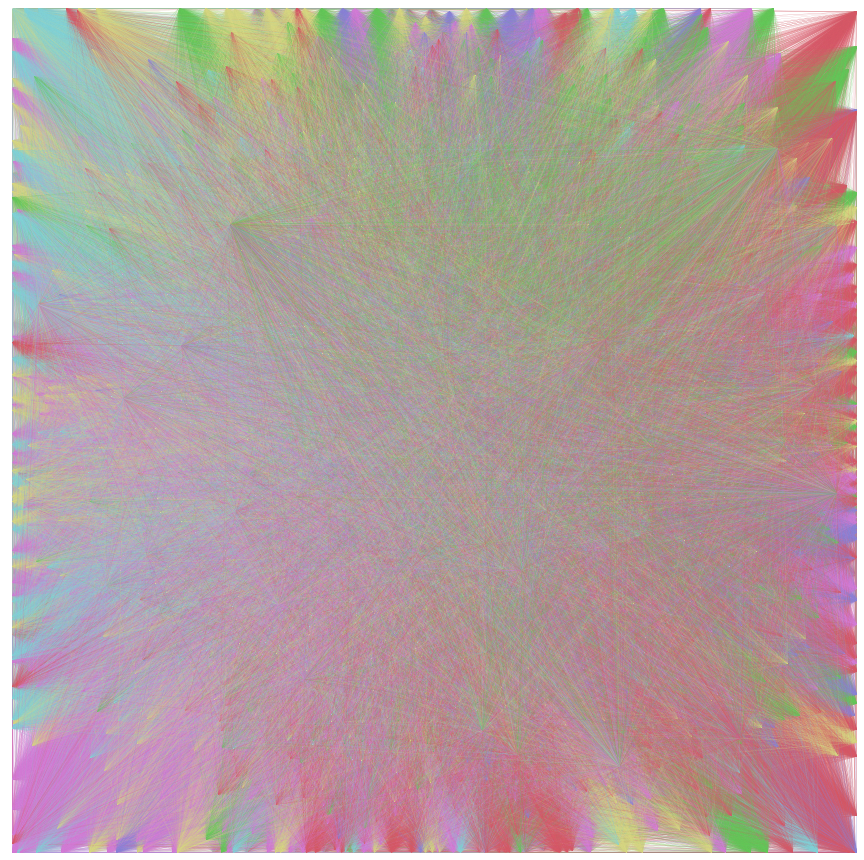
Or perhaps not… This does, though, allow the simple Ego Network examination outlined above to provide us with some sense of shared tropes. Here’s the Ego Network around Portal 2:
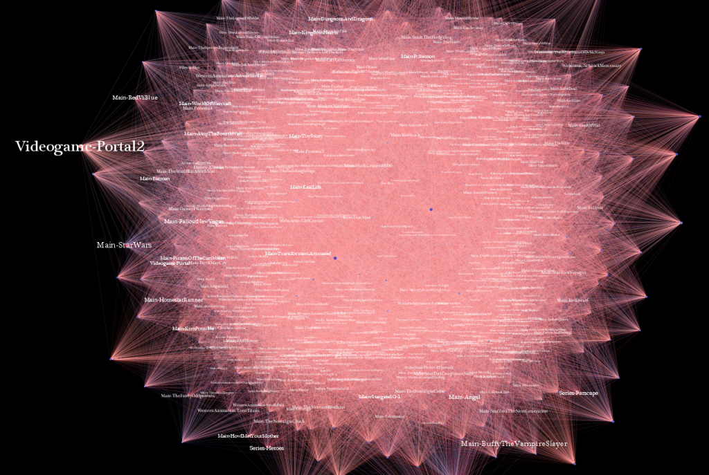

It’s a relatively simple calculation. One takes the percentage of links represented in Work A and multiplies it by the percentage of links represented in Work B. This similarity score allows us to see the most similar work based on shared tropes. It’s crude, and I’m sure not as nuanced or fast as the node similarity measures that Amazon and Google and the Department of Defense have come up with, but it works and is comprehensible, especially to an audience less familiar with network analysis.
For example, if we look at the shared tropes between Angel and Star Wars: Clone Wars, we find nearly a hundred. This sounds like a lot, until we notice that Angel has almost a thousand tropes and SW:CW has a comparably paltry 386. This means the shared tropes constitute just 10% of the Angel tropes and 25% of the SW:CW tropes. This would result in a similarity score of .1 * .25 or .025. The result is a scale starting at 1.0 (both works share all of their tropes in common) that gives a good indication of similarity by trope.

However, this ignores the interrelated nature of tropes and of most user-defined free metadata that annotates material. It’s a serious problem for libraries trying to reconcile the ontologies of multiple groups to see if they really meant the same thing. With that in mind, I can get into the other method for finding similar works on TV Tropes, which draws its inspiration from Topic Modeling. Topic modeling assumes a probabilistic model that creates a work out of a set of “topics”, which in the model are simply collections of words. For TV Tropes, we can think of these topics as collections of tropes.
To achieve this with the TV Tropes network, we have to assume the regions discovered in the previous analysis are real thematic categories. They’re not–the weak community signal would not satisfy a critical audience. But for the purpose of this exploration, we’ll assume these are strong, relatively accepted categories. That said, they do seem to show substantial thematic patterns with regard to the work, so maybe they shouldn’t be wholly disregarded. You’ll notice the above network diagram has Skittles-colored links, that’s because it’s actually showing you the theme of the links, based on the six categories from the analysis in Part 2.
Why do we need categories at all? Because as TV Tropes is currently organized, it’s a checklist, rather than a percentage. If a trope shows up in a work, it gets noted, and while this is fine for an individual reader, it’s fundamentally “free” data (like unprocessed imagery or text) that needs to be compressed into recognizable categories to be dealt with in whole. There is no measurement of how much a particular trope relates to a particular work, and so by combining them into themes, we can develop that measurement. This compression is naturally messy and lossy, but it’s unavoidable. You simply cannot read 50,000 entries in a species biodiversity database, you need to use topic modeling to summarize the variation in topic over species and threat status just as you cannot read a million Manga pages and need to compress that data into categorical attributes of the images themselves.
For this metric, the tropes appearing in a work are lumped into their category and given as a percentage of the total work. If a work has 100 tropes and 10 of them are from the Video Games category, then it has a Video Games score of 10%.
I’ve taken the six categories from Part 2 and revised their names a bit, so as to be more recognizable or better described. I’ve received or read a number of excellent interpretations of them that have influenced the titles.
Meta (Yellow) – Originally “Dumbledore’s Secret”
Sgt. Pepper’s Lonely Hearts Club Band (84%) is narrowly beat out by NPR (85%) while Dragnet (73%) demonstrates that this is representative not only of the content of the media but the manner in which the TV Tropes community engages the media. Dragnet is neither self-consciously ironic nor is the work itself focused on analysis, like NPR, but it is used on TV Tropes as a vehicle for analysis of the entire genre, as evidenced by its introduction:
Archetype of the Police Procedural, Dragnet followed the exploits of Sgt. Joe Friday (badge number 714) and his partner, Bill Gannon, as they investigated crime in Los Angeles.
Traditional (Red) – Originally “Disney Characters and Motives”
Machiavelli’s The Prince has 78 tropes associated with it, 83% of which fall within the Traditional category. Other notable works scoring highly in the Traditional category are American Gangster and Tosca.
Id (Purple) – Originally “Dark Urges”
I had noted this theme as “id” in my first write-up, but then changed it because I thought it too much implied a level of understanding of psychoanalysis that I don’t have. After I posted it, though, it seemed like everyone thought id was a better description than “dark urges”. Highly represented in the top percentage makeup by Manga, but also includes The Notebook (84%).
Video Games (Green) – Originally “Overcompensation”
Objects and situations typically associated with video games, such as power-ups, hordes of weak enemies and platform-related mishaps. Quite a few video games, like Eye of the Beholder (91%) and GoldenEye (77%) are almost entirely made up of tropes from this theme, as are miniature and chit-based wargames.
Lampshade (Teal) – Originally “A Very TV Tropes Movie”
Humor and wit with what seems to be a heavy acknowledgment of the format of the work. Fawlty Towers is 53% Lampshade.
Supernatural (Blue) – Originally “Monsters”
As readers have noted, this final category isn’t truly about horror, or even monsters in the typical sense of the word, but about a composite set of themes having to do with the strange and supernatural. The Velveteen Rabbit, with its talking animals, fairies and dolls coming to life, ranks as 79% Supernatural.
Below you’ll find a sample of works on TV Tropes that are ranked by their thematic makeup, as well as lists of similar works based on the similarity score developed above. It is at this point where I step out of my realm of expertise and into that of the folks I typically work with, who interpret these things and integrate the patterns into larger questions of the evolution of theme and style, or the development of genres or the criticism of criticism. So, it stands to reason that I should not interpret any of these patterns but rather leave them to be interpreted, as problematic or useful or some mix thereof.

Top 50 Most Similar Works Based on Shared Tropes
Id: 5%
Meta: 5%
Lampshade: 10%
Traditional: 14%
Supernatural: 21%
Video Games: 46%
Champions Online is the most similar by thematic distance, Ultima VII Part II (11), Final Fantasy XI (14) and Spore (17) are all in the top 20.

Top 50 Most Similar Works Based on Shared Tropes
Id: 6%
Supernatural: 12%
Lampshade: 18%
Meta: 19%
Traditional: 20%
Video Games: 25%
Peter and the Wolf (6), Robocop (10), Iron Man (16) and Resident Evil 3 (19) are all in the top 20 based on thematic distance.

Top 50 Most Similar Works Based on Shared Tropes
Supernatural: 6%
Id: 6%
Video Games: 6%
Lampshade: 13%
Traditional: 33%
Meta: 37%
Convoy (5), Chariots of Fire (6), Mutiny on the Bounty (13), No Country for Old Men (15) and The Da Vinci Code (20) are all in the top 20 based on thematic similarity.
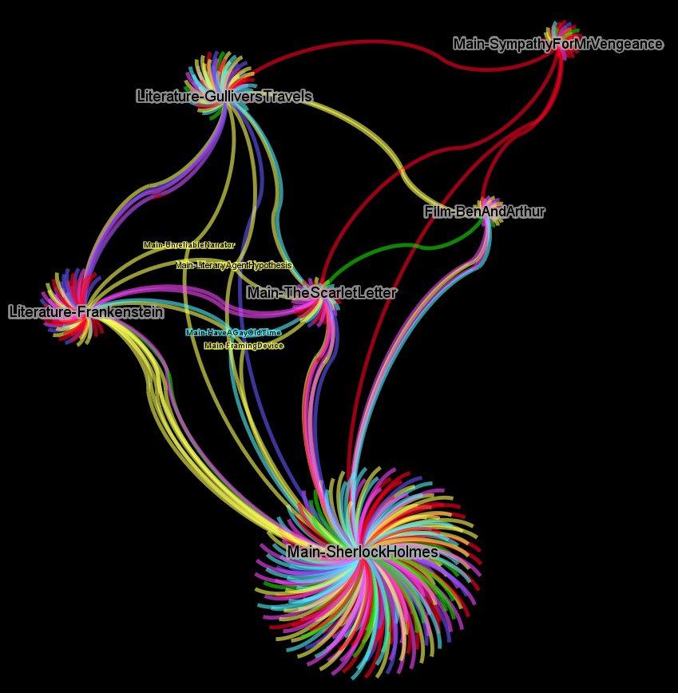
Frankenstein (Novel)Top 50 Most Similar Works Based on Shared Tropes
Video Games: 3%
Lampshade: 5%
Supernatural: 17%
Id: 17%
Meta: 28%
Traditional: 29%
The Giver (7), Teenage Mutant Ninja Turtles (8), Do Androids Dream of Electric Sheep (14) and From Hell (16) are all in the top 20 based on thematic similarity.
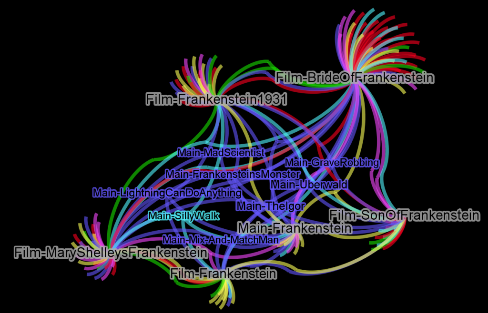

Top 50 Most Similar Works Based on Shared Tropes
Lampshade: 7%
Id: 14%
Meta: 34%
Supernatural: 45%
Most similar to Time Cat based on thematic makeup.
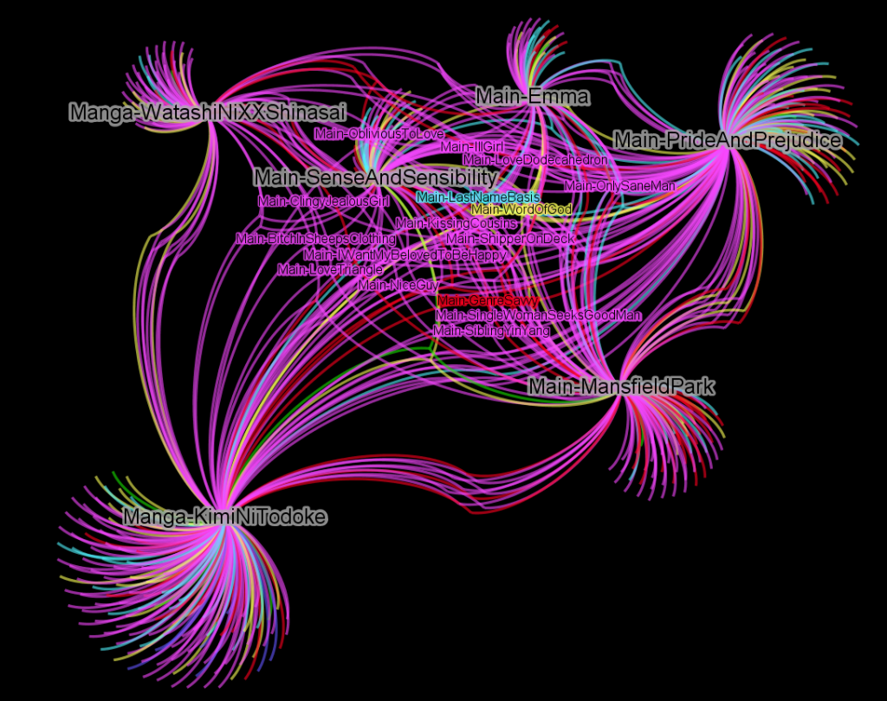

Top 50 Most Similar Works Based on Shared Tropes
Video Games: 1%
Meta: 11%
Lampshade: 12%
Traditional: 13%
Id: 62%
Sunset Beach (7), Friends with Benefits (8), Cat on a Hot Tin Roof (13) and Pride and Prejudice (16) in the top 20 by thematic similarity.
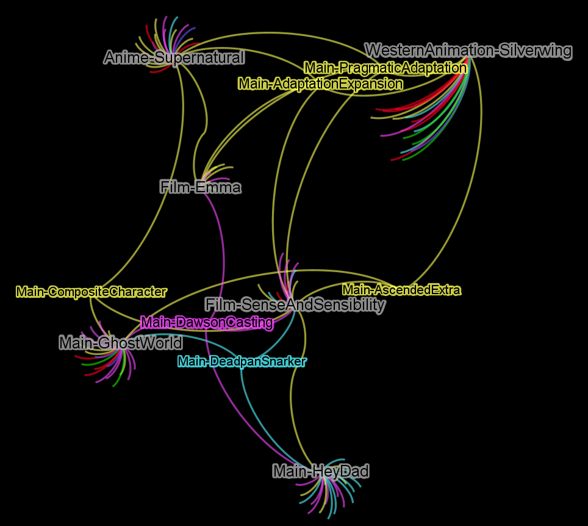
Sense and Sensibility (Film)Top 50 Most Similar Works Based on Shared Tropes
Traditional: 11%
Lampshade: 18%
Id: 29%
Meta: 41%
The Russian musical Hipsters is the most similar based on thematic makeup.
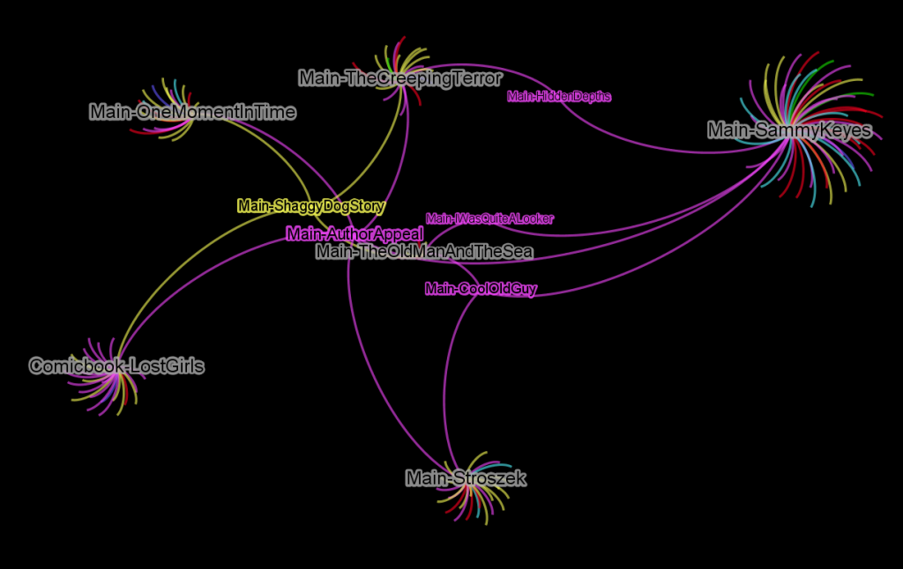

Top 50 Most Similar Works Based on Shared Tropes
Traditional: 22%
Id: 33%
Meta: 44%
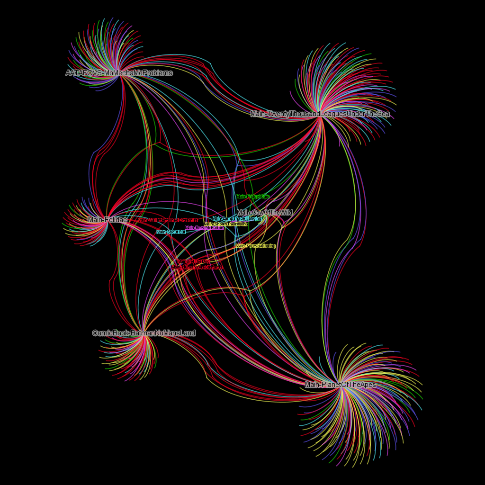
20,000 Leagues Under the SeaTop 50 Most Similar Works Based on Shared Tropes
Video Games: 6%
Id: 11%
Meta: 13%
Supernatural: 13%
Lampshade: 17%
Traditional: 40%
Aesop’s Fables (2) and The Adjustment Bureau (8) are in the top 20 based on thematic similarity.
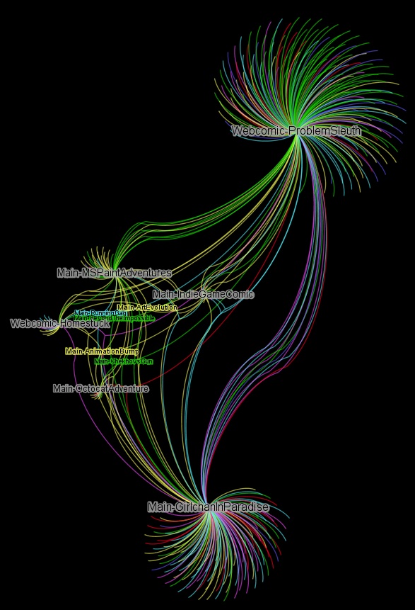
MS Paint AdventuresTop 50 Most Similar Works Based on Shared Tropes
Supernatural: 2%
Id: 2%
Traditional: 2%
Lampshade: 6%
Video Games: 35%
Meta: 53%
Breakout is the most similar based on thematic makeup.
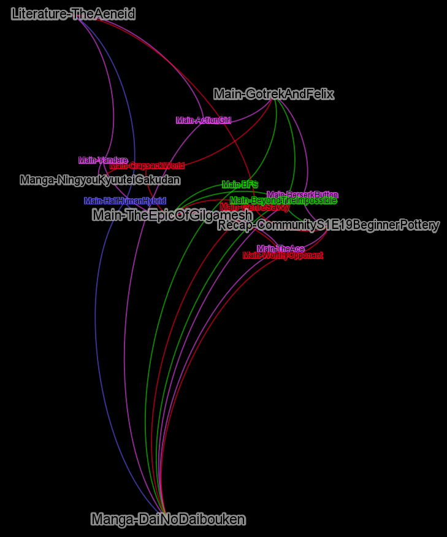
Top 50 Most Similar Works Based on Shared Tropes
Lampshade: 3%
Video Games: 10%
Meta: 10%
Supernatural: 16%
Traditional: 28%
Id: 33%
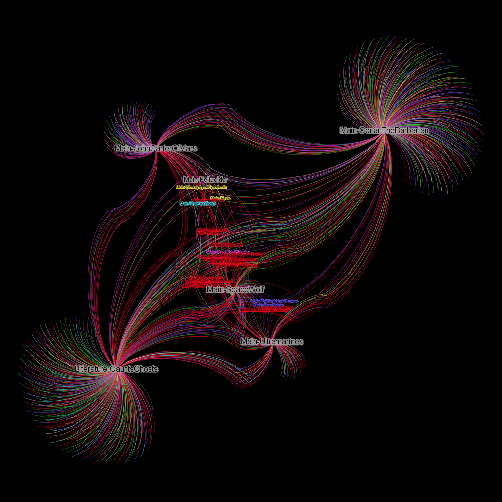
John Carter of MarsTop 50 Most Similar Works Based on Shared Tropes
Lampshade: 5%
Video Games: 8%
Meta: 9%
Supernatural: 16%
Id: 24%
Traditional: 39%
The Lion, the Witch and the Wardrobe (13) is in the top 20 most similar works based on thematic makeup.

Top 50 Most Similar Works Based on Shared Tropes
Id: 6%
Lampshade: 7%
Supernatural: 12%
Meta: 14%
Traditional: 21%
Video Games: 40%
Megaman X (2), Ultima VII (3), Halo (4), Starcraft II (11) and Mass Effect 3 (14) in the top 20 by thematic similarity.